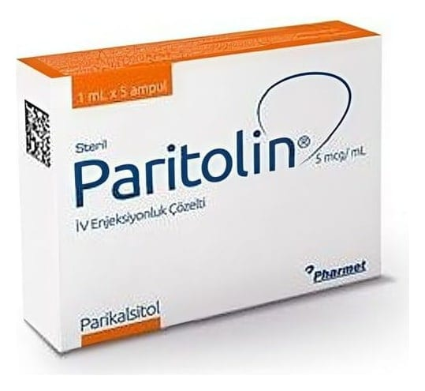

Paritolin 5 mcg/ml I.V. Enjeksiyonluk Çözelti, 5 Adet

Ne için kullanılır
KT · Bölüm 1• PARİTOLİN 5 mcg/mL 1 mL enjeksiyonluk çözelti içeren 2 mL’lik ampullerde 5 ampullük kutular halinde kullanıma sunulmuştur. • Her 1 mL PARİTOLİN enjeksiyonluk çözelti 5 mikrogram parikalsitol içerir. • PARİTOLİN enjeksiyonluk çözelti; sulu, berrak ve renksiz bir çözeltidir. • PARİTOLİN enjeksiyonluk çözelti, aktif Vitamin D’nin sentetik bir formunu içerir ve vitamin D grubu ilaçlara aittir.
• Vitamin D, karaciğerde başlayan ve böbreklerde tamamlanan iki basamaklı işlem ile vücutta aktive olur. Aktif D vitamini, böbrekler ve kemikler de dahil olmak üzere, vücuttaki birçok dokunun normal faaliyet göstermesi için gerekli bir maddedir. PARİTOLİN enjeksiyonluk çözelti, vücut yeterli miktarda üretemediğinde aktif D vitamini için bir kaynak sağlar. • PARİTOLİN enjeksiyonluk çözelti, hemodiyalize girilen kronik böbrek hastalığındaki aktif D vitamini seviyelerinin düşük olması ile ilişkilendirilen kandaki yüksek paratiroid hormon seviyelerinin (sekonder hiperparatiroidizm) önlenmesi ve tedavisinde kullanılmaktadır.